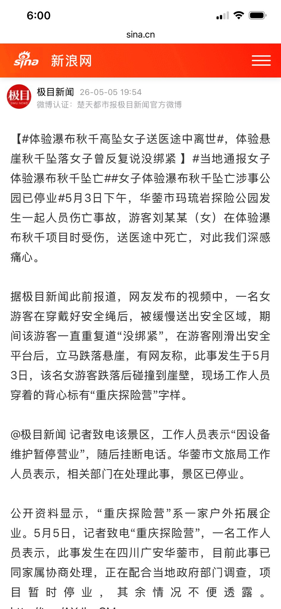
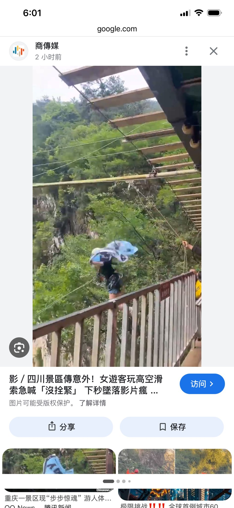

索瑟尔 𝓢𝓸𝓻𝓬𝓮𝓻𝓮𝓻🍥🏳️⚧️
@Sorcerer198964
RT @caijingshujuku: 女子玩重庆探险营高空滑索项目，安全绳没拴紧直接高空坠亡了
可以听到视频里女生说了两遍“没拴紧”，但工作人员还是不负责任把她放下去了
之后躺担架里满身是血，身亡
极目新闻等多家媒体报道了此事 …


财经数据库
@caijingshujuku
女子玩重庆探险营高空滑索项目，安全绳没拴紧直接高空坠亡了
可以听到视频里女生说了两遍“没拴紧”，但工作人员还是不负责任把她放下去了
之后躺担架里满身是血，身亡
极目新闻等多家媒体报道了此事 https://t.co/1vlg04bhN6